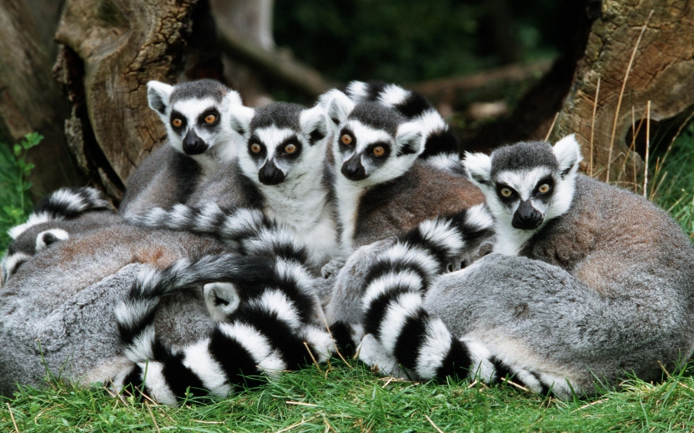
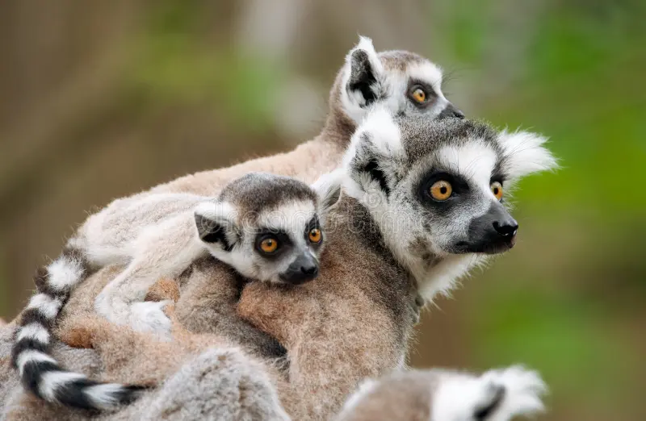
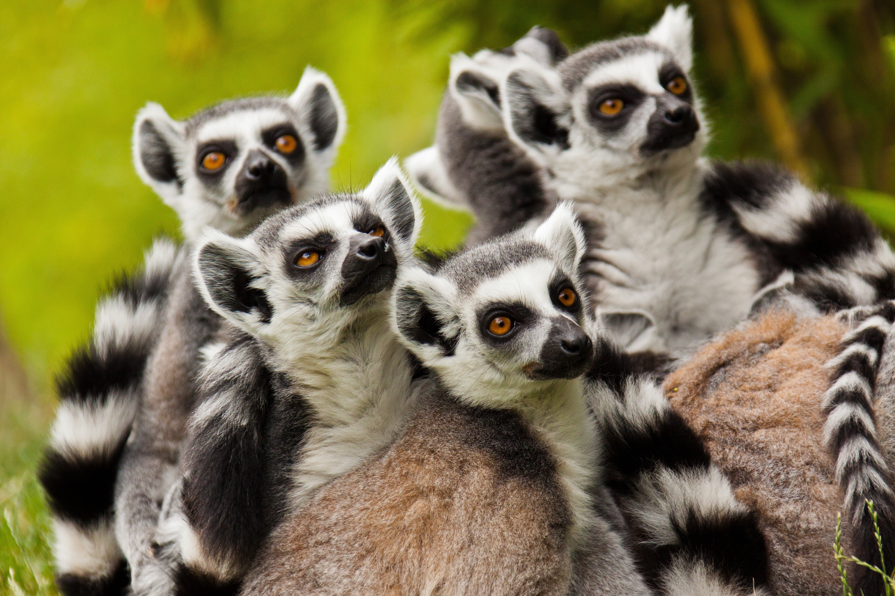
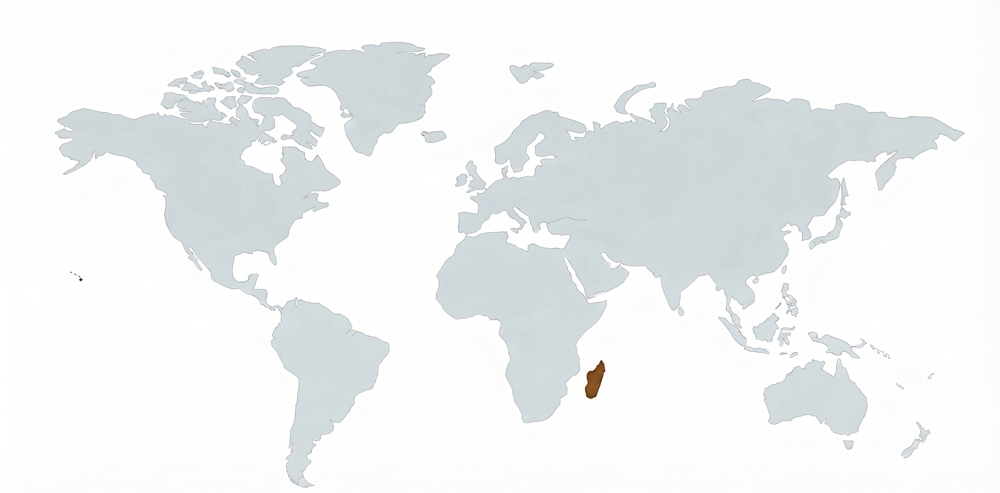

Lémur
Lemur catta
O lémure-de-cauda-anelada (Lemur catta) é um dos primatas mais carismáticos e fáceis de reconhecer do mundo, endémico da ilha de Madagáscar. Destaca-se de imediato pela sua impressionante e longa cauda adornada com anéis alternados pretos e brancos, que funciona como um importante sinalizador visual e ferramenta de equilíbrio. Com uma pelagem cinzenta nas costas, ventre claro e um característico "óculos" escuro à volta dos olhos expressivos, este animal alia uma enorme agilidade nas árvores a um comportamento altamente social e curioso.
Habitat Natural

O lémure-de-cauda-anelada habita preferencialmente florestas de galeria, bosques secos espinhosos e áreas arbustivas abertas do sul e sudoeste de Madagáscar. Ao contrário de muitos outros lémures de hábitos estritamente arborícolas, esta espécie passa uma parte considerável do seu tempo a forragear e a deslocar-se no solo, adaptando-se com facilidade a terrenos rochosos e secos. Dependem de fontes de água doce e de árvores frondosas que lhes sirvam de abrigo e local de descanso durante a noite.
Dieta
O lémure-de-cauda-anelada é um primata omnívoro de dieta flexível e oportunista, embora fortemente herbívora. A maior parte da sua alimentação é composta por frutos silvestres, flores, folhas tenras, casca de árvores e seiva. Ocasionalmente, complementam a dieta com pequenas insector e matéria vegetal diversa, aproveitando a abundância sazonal nas épocas de chuvas. Passam grande parte da manhã a banhar-se ao sol de braços abertos antes de iniciarem as suas rotinas diárias de alimentação em grupo.
Curiosidades
- A célebre cauda anelada não serve para agarrar ramos, mas é erguida bem alto em forma de "bandeira" para manter o grupo unido durante os deslocamentos na vegetação alta.
- Os lémures vivem em sociedades matriarcais estritas, onde as fêmeas lideram o grupo, tendo prioridade absoluta no acesso à comida e aos melhores locais de descanso.
Os nossos Lémures
No Zoo Jonçela, um animado e saltitante grupo de lémures-de-cauda-anelada — liderado pela matriarca Zula e acompanhado pelo curioso macho Kofi — é uma das grandes atrações para os visitantes. Com 6 anos de idade, a Zula exibe uma liderança firme e uma cauda perfeita com 14 anéis pretos, medindo cerca de 45 centímetros de corpo e pesando 2,6 kg. O Kofi, com 5 anos, destaca-se pela sua agilidade e energia constante, pesando cerca de 2,3 kg. O grupo partilha um amplo recinto arborizado com estruturas de cordas e troncos, onde demonstram a sua fascinante vida social.